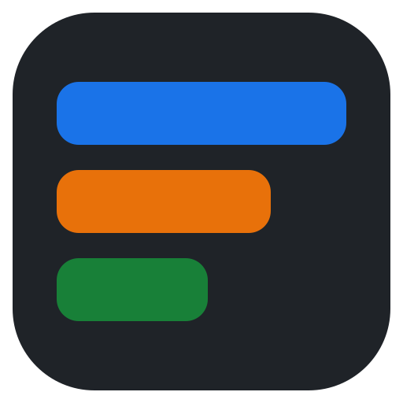

TrabajoCChrome
Sprint 42In progress
Refactor del login
Cache de sesionesIr al tab
Revisión del PR #418
Latencia de la APITo do
Runbook de despliegueDone

Tabstage Código en GitHubOrganiza enlaces en grupos y carpetas. Cada grupo se abre en su propio navegador, o en el que tengas por defecto. Si el tab ya está abierto, Tabstage te lleva a él. Para macOS y Linux, sin extensiones.
curl -fsSL https://de-hv.github.io/tabstage-desktop/install.sh | sh
Con Homebrew: brew install --cask de-hv/tap/tabstage
Trabajo en Chrome, lecturas en Firefox, lo personal en Safari. Los grupos sin navegador asignado usan el que tú definas por defecto.
En macOS, con Safari y los navegadores basados en Chromium, un clic lleva al tab que ya tienes abierto. En los demás se abre un tab nuevo.
Todo vive en un JSON que puedes guardar en iCloud, Dropbox o un repo para tenerlo igual en todos tus equipos. Nada sale de tu máquina.
curl -fsSL https://de-hv.github.io/tabstage-desktop/install.sh | sh -s -- --systemcurl -fsSL https://de-hv.github.io/tabstage-desktop/install.sh | sh -s -- --version v0.1.0curl -fsSL https://de-hv.github.io/tabstage-desktop/install.sh | sh -s -- --uninstall